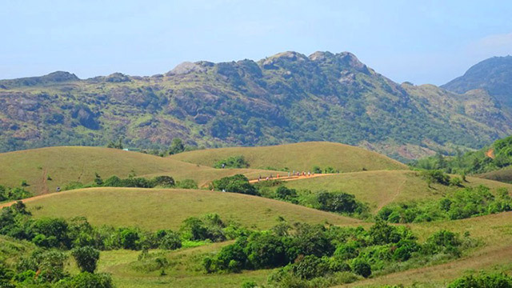

KOTTAYAM
Kottayam is a district in the Indian state of Kerala. Kottayam literally means the interior of a fort—Kotta + Akam. Flanked by the Western Ghats on the east and the Vembanad Lake and paddy fields of Kuttanad on the west, Kottayam is a place that is known for extraordinary qualities.
POPULATION
As of 2001 India census,[13] Kottayam Urban Agglomeration had a population of 172,878, while Kottayam district had a population of 1,974,551. The population of Kottayam municipality was 136,812. Males constituted 62% of the population and females 38%. Population growth in the district had a diminishing trend with a decadal population growth rate of 6.5% compared to 9.35% across the decade 1991–2000.[14] Population growth in the municipality is due to migration for employment.
AREA
77.8km2
TOURIST SPOTS
ILLIKKAL KALLU

Located at a height of 6000 ft above the sea level in the Western Ghats of Kottayam, Kerala, Illikkal Kallu is a major tourist attraction and one of the most pristine spots in all of India. Situated in Moonnilavu Village, Meenachil taluk, the nearest city to the summit is Teekoy.
MARMALA WATERFALLS

Located at a distance of few kms from Erattupetta in Kottayam inside a private rubber estate, Marmala Waterfalls are popularly known as the ‘enchantress of the jungle’. Plummeting from a height of 200 feet, the unblemished clear waters create and aura of mist around them.
KOTTATHAVALAM
A fascinating cave carved out of rock surface is Kottathavalam lying on the top of a Murugan Hills at Kurisumala. The cave is considered to be the resting place for Madura Royal family